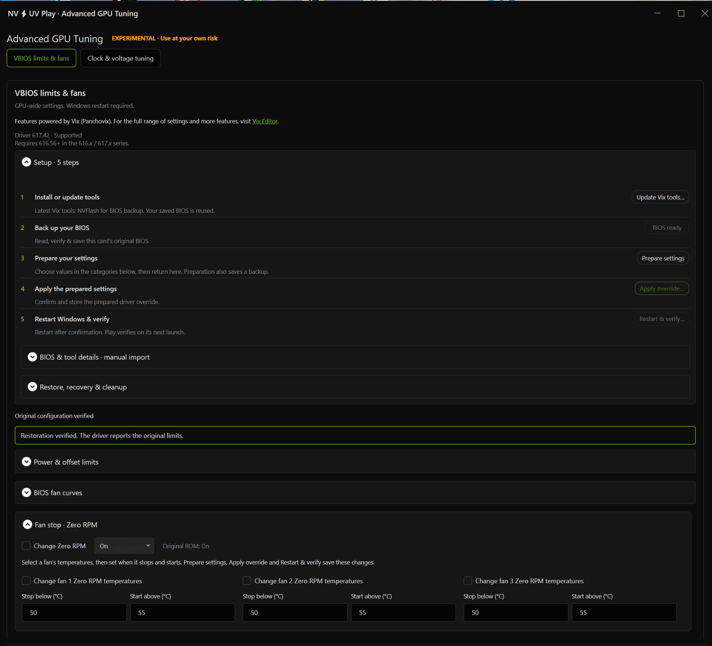
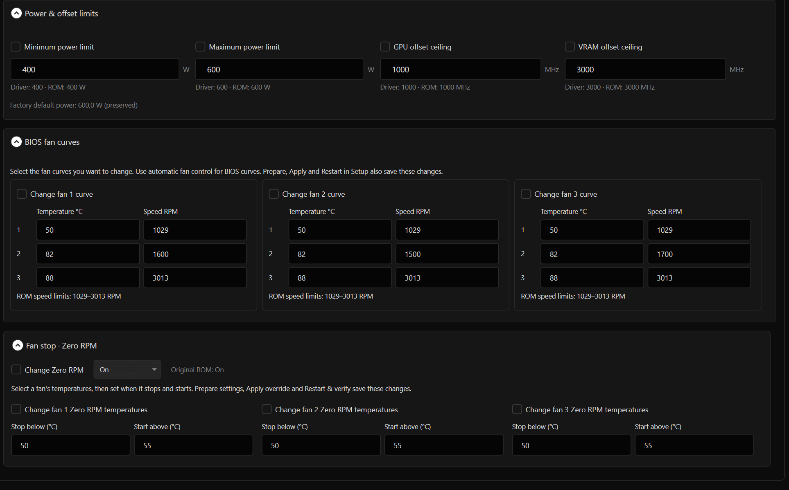
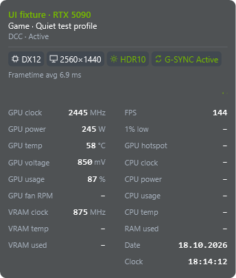
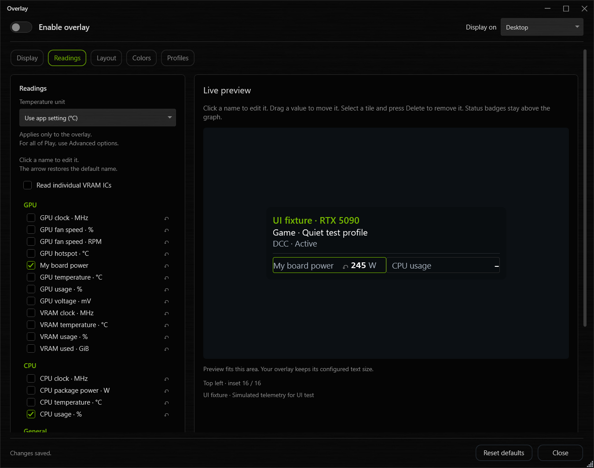
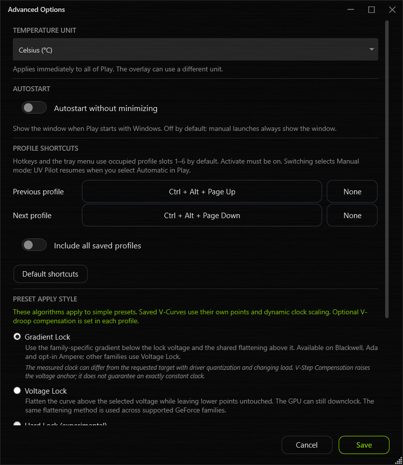

UPDATES AND DEVELOPMENT
Play News
NEW IN VERSION 2.1.4
More control over limits and fans with Vix
Power and offset limits, BIOS fan curves and Zero RPM, with a guided setup from BIOS backup to verification after restarting Windows.
Selected Vix features, guided by Play
Enable Settings → Experimental features → Advanced GPU Tuning, then open Curve editor → Advanced GPU Tuning. The new VBIOS limits & fans area is currently available for Blackwell, with NVIDIA driver 616.56 or later within the 616.x and 617.x series. Other GPU families and driver series are not currently enabled.
Play downloads the original, unchanged Vix tools separately from their official project releases and uses their command-line interface. The integration includes selected settings; Vix provides the underlying editing and loading tools.
Adjust the minimum and maximum power limit, GPU offset ceiling and VRAM offset ceiling. These are GPU-wide limits. Changing them does not itself apply a power limit or an offset to your UV profile.
Thank you, Panchovix!
A big thank you to Panchovix and the Vix contributors for opening up these ways to customize a GPU. Take a look at the original projects for the full range of settings and more features:
One setup for limits and fans
- Install or update tools. Download Vix and NVFlash for the BIOS backup.
- Back up your BIOS. Play reads and checks the BIOS from your card. The verified backup is reused for later changes.
- Prepare settings. Select the values you want to change. The relevant categories open and briefly light up. Preparation also saves a backup.
- Apply override. Review and confirm the prepared settings. Play reports what was stored.
- Restart & verify. Confirm the Windows restart. Play checks the saved state on its next launch.

The physical VBIOS is not flashed. Vix installs a Windows driver override. Your own UV curve cannot currently be stored as a new stock curve in this integration.
BIOS fan curves and Zero RPM
For supported entries in your saved ROM, adjust each fan's curve using temperature and RPM. Zero RPM includes its on/off setting and the available stop-below and start-above temperatures. Unsupported controls remain unavailable.
For example, a fan can stop below 50 °C and start above 55 °C if those values are supported by its ROM. Use automatic fan control for the BIOS curves to take effect. These settings use the same Prepare, Apply and Restart workflow.

Restore and restart together
Setup → Restore, recovery & cleanup restores the original settings and restarts Windows after confirmation. Play checks the restoration afterward. Completed restarts no longer leave an outdated restart notice.
Remove tools, keep backups
Remove downloaded tools removes the managed tool downloads while keeping BIOS backups. An existing override must first be restored, followed by a restart and verification.
A clearer tuning window
Expandable categories remember their state. Inputs show current driver limits, while original ROM values remain visible for comparison. Profile-specific clock and voltage tuning stays in its own tab, with shorter help and separate save actions.
Apply a UV curve at sign-in
Play already supports a startup profile. With normal Play autostart disabled, the startup task applies the saved curve at Windows sign-in and exits. Play does not have to remain running for that curve. This does not write the curve to the BIOS.
More accurate curve and game recognition
Curve verification now accounts for driver rounding and the current offset range, including increased ceilings. Correctly applied curves should no longer trigger a misleading warning. Missing or mismatched readbacks still report a problem. A confirmed curve is not a stability test.
Game detection corrects false ICARUS matches. Profile assignment is rechecked when the detected executable changes. A process fallback also improves overlay window matching in Helldivers 2.
The About window has also been adjusted for smaller windows and higher scaling. Third-party notices, project links and credits remain accessible there.
Play does not start after an update? Check Windows Security → Virus & threat protection → Protection history to see whether a file was quarantined. An entry alone does not establish a false positive. Microsoft's Protection history guide ↗
More room for your overlay layout
Adjust the height of the frametime graph independently. GPU, CPU and General labels can use separate colors, with an optional colored grid to make groups easier to distinguish.
Move API, resolution, HDR and G-SYNC indicators between reading cells and the status row. For example, keep API and resolution in the row above the graph while placing HDR next to your other display readings.
Borderless windowed mode remains recommended; exclusive fullscreen is unsupported. G-SYNC compatibility reports remain under investigation.
MFG and saved DCC settings
The MFG preset uses a 100% power limit again. DCC retains its saved NVIDIA Max Frame Rate settings when reopened, including while DCC is off.
Stabilizer corrections
Corrected Stabilizer handling of Blackwell auxiliary curve points. Optional VRAM correction reduces positive memory offsets towards Stock. The Stabilizer responds to detected driver crashes; it does not establish that every game crash comes from undervolting.
Game database 2.41
737 games, including Assetto Corsa and Transport Fever 3. A suggested profile remains a starting point to test on your own card.
NV-UV Play v2.1.3
NEW IN VERSION 2.1.3
Better overlay customization
Custom names, organized readings and new status indicators. Plus your choice of Celsius or Fahrenheit.
The new DEV! template
DEV! offers wider columns, a rearranged grid and 71% background opacity. API, resolution, HDR and G-SYNC sit above the frametime graph.
Load it through Overlay → Profiles → Use DEV! template. Save your current layout as a profile first if you want to keep it. Updating Play alone preserves existing layouts.

Organize and rename readings
The GPU, CPU and General categories make readings easier to find. Clear names such as GPU usage and CPU temperature identify what is measured.
Click a name in Readings or the preview. Enter or leaving the field saves it, Escape cancels, and the reset arrow restores the default. Custom names are saved with the overlay profile.
Drag a value to move it. Delete removes a selected tile or badge; inside a name field, it deletes text. Mouse-wheel scrolling works throughout the overlay settings.

Display status above the graph
Enable each indicator under Overlay → Readings → General. Existing status readings move above the grid and keep their names and colors.
- API
- Detected graphics API, such as DX11, DX12 or Vulkan. Ambiguous DirectX results remain DXGI.
- Resolution
- Game window client area or desktop monitor in physical pixels. Does not show internal DLSS, FSR or dynamic resolution.
- HDR
- Display output: Off, HDR10, HDR10+ or Unknown. Does not distinguish native game HDR, Auto HDR and SDR content on an HDR desktop.
- G-SYNC / VRR
- Driver status: Active, Inactive or Unknown. Active does not confirm correct operation in a game; Unknown means no reliable status is available.
Celsius or Fahrenheit
Settings → Advanced options → Temperature unit sets the unit for Play, including fan-curve inputs and scanner readings.
Under Overlay → Readings → Temperature unit, the overlay can follow the app or use its own unit. The choice is saved with the overlay profile.
Play can show 60 °C while the overlay shows 140 °F. Cooling settings remain unchanged.

Open Stabilizer corrections
Stabilizer Settings → Open corrections shows saved adjustments without losing pending settings. Stabilizer reacts to detected GPU driver crashes.
Interface improvements
Clearer update text, larger patch notes with expandable versions, plus corrected green outlines and rounded dialog buttons.
Game database 2.40
735 games, now including Clive Barker’s Hellraiser: Revival. Rust suggests Balanced as its starting profile.
Compatibility and diagnostics
Borderless windowed mode recommended; exclusive fullscreen unsupported. G-SYNC reports remain under investigation; a fix is not confirmed. Extended reports capture overlay and display information. Include the game, display mode and what changes when toggling with Ctrl + Alt + O.
NV-UV Play v2.1.2
NV-UV PLAY v2.1.2
Keep DCC profiles, see your graphics API
DCC saves learned profiles reliably again and can reuse them the next time a game starts. Version 2.1.2 also adds a graphics API reading, improves the frametime graph and cleans up old update files.
Example: an existing 120 FPS limit
If the NVIDIA driver has a global 120 FPS limit, DCC displays that value. It also reads the global VSync setting. Changes made through DCC apply while it is in use; turning DCC off restores the previous driver settings.

Example: show the graphics API
Open Overlay settings → Readings and enable Graphics API. Adjust its position and color just like any other reading.

The display covers DirectX 8, 9, 10, 11 and 12, Vulkan and OpenGL. Detection depends on the game and presentation mode. Ambiguous DirectX results remain DXGI. OpenGL identification does not add FPS capture.
Arrange readings your way
An overlay can show readings in two columns with the frametime graph below. The graph has been improved. Layouts can still be customized and saved individually.

If a game is not recognized
Check whether it appears in the Game Library and add it manually if needed. Use Request a game to request inclusion in the shared library. Database 2.39 contains 734 entries, including Life is Strange, Life is Strange Remastered and Blitzkrieg. The Golf It! executable assignment has been corrected.
What happens to update leftovers
Confirmed failed updates are removed after seven days without changes once a newer Play version has started successfully and run for at least one minute. Active updates and unrecognized files remain protected. New update files are stored in ProgramData/NV-UV-Play/Updates; cleanup also includes the former CurveLab update folder.
Recover DCC after changes
Recover DCC can restore a blocked state after a driver environment change, following confirmation and GPU checks. Saved profiles are preserved. DCC stays off initially, and automatic profile switching remains paused until resumed. The recovery notice points to the UV profile slots.
Get version 2.1.2
The update is available through Updates in Play and as a portable ZIP.
NV-UV Play v2.1.1
NV-UV PLAY v2.1.1
Patch notes are back
Version 2.1.1 fixes the missing in-app patch notes after updating. The complete 2.1.0 notes are included. All features introduced in 2.1.0 remain available.
NV-UV Play v2.1.0
NV-UV PLAY v2.1.0
More control over profiles and your desktop
Introduced in 2.1.0 and included in 2.1.1: explore the new features with current screenshots and practical examples.
Switching profiles with tuning values
Applying a profile uses that profile’s tuning values. A profile without these values restores the values Play captured earlier. Enabling Advanced GPU Tuning alone does not change GPU settings.
Use blocked profiles again
An unsupported NVIDIA power-efficiency function no longer blocks Play or profile application. The fix also covers users already affected. A damaged startup profile can be replaced by selecting a new profile.
DCC detection and diagnostics
Detection uses additional game and path information when executable names are shared. DCC performance logging is enabled by default with limited retention. Game database 2.36 contains 711 entries, including Lessaria: Fantasy Kingdom Sim (Balanced), ACE COMBAT ZERO (Eco) and ACE COMBAT 8 (Performance).
Application cache outside Temp
Extracted application files are stored under LocalAppData. The update carries over profiles and Windows startup automatically. Old unused cache versions are cleaned up, keeping the current and one previous version. Running Play versions are protected and may temporarily require additional cache folders.
ASIC quality on Blackwell
Settings → About now shows ASIC quality and Core voltage limit in mV on Blackwell. The limit is read at startup and is not a fixed Stock VID.
Example: desktop → game → desktop
Choose your own desktop profile and assign Balanced to a game. With UV Pilot on, Play uses your desktop profile until the game starts, switches to Balanced, then returns after the game ends. Game override affects games only. Games marked No Override retain their own assignment.
Example: turn one tuning value Off
In the active profile, turning a slider Off or clearing its checkbox immediately restores only that field to the value Play captured before changing it. Other pending edits are not applied. Save keeps the field Off in the profile; Cancel does not reapply it. The restored value is not necessarily zero.
Manual quick selection
Hotkeys and tray selection activate a profile in Manual mode. UV Pilot resumes when you select Automatic in Play. Occupied slots 1 to 6 remain the default for a short selection. Include all saved profiles in Advanced options adds other saved profiles.
More room for the curve
The Curve editor keeps the graph visible while settings scroll separately. Bottom actions remain accessible at small window sizes and high UI scaling. Game override & presets and Advanced options are more compact too.
NV-UV Play v2.0.16
ALREADY IN NV-UV PLAY v2.0.16
Check curves and manage profiles more easily
- Curve limits: A manual test checks lower curve starts on eligible Blackwell desktop cards. Its result applies to the tested GPU, BIOS and driver combination and does not replace stability testing.
- Scanner and import: Additional validation of RTX 30 / RTX 40 curve layouts and manual import of an Afterburner curve for the selected GPU. Importing does not apply the curve automatically.
- Profiles and display: Clearer actions for using, editing and reviewing history; fixes for saved curves, GPU readings and repeated overlay scaling.
NV-UV Play v2.0.15
NEW IN v2.0.15
Shape your curve
Choose your target voltage and clock in Curve editor. Use the arrow beside Flatline, or right-click the button, to choose how Play adjusts the curve.
Preview before applying
Flatline first creates a draft. Inspect it, adjust individual points and compare changes with Undo / Redo. DRAFT indicates that your edits have not been applied yet.
Apply curve applies the draft to the GPU and saves it to the selected profile slot.
Discard your edits
Use Discard draft beside Undo/Redo or in the selected slot’s right-click menu to reload its saved settings into the editor. Unsaved power-limit, VRAM and tuning settings are discarded too. Active GPU settings remain unchanged.
Confirm before overwriting
Before Apply curve overwrites a saved profile or replaces a preset slot, Play names the affected profile and asks for confirmation. Other games and slots linked to that saved profile also use its updated settings. The original built-in preset remains available.
To temporarily run at stock without overwriting your profiles, use Default.
Matched to your GPU
Manual rises require Gradient Lock and, on Ampere, the optional gradient setting. Turing uses its existing preset behavior without a manual rise start. The normal Blackwell view begins at 800 mV; 850 mV is the recommended rise start.
New manual Flatline profiles require Play 2.0.15.1 or newer. Saved curves are preserved. To use the corrected calculation, choose Flatline again, review the draft and apply it. Test your own settings for stability on your card.